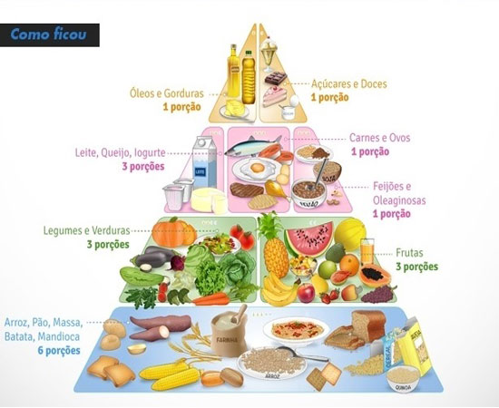

Ter uma alimentação saudável é fundamental para que as funções do organismo funcionem de foma equilibrada. De forma prática, uma alimentação saudável é aquela composta por todos os macro e micronutrientes. Mas então, o que é alimentação saudável?
Alimentação saudável contém: Os macronutrientes, que são os carboidratos (pães, massas e batatas, entre outros), gorduras (como os óleos, as oleaginosas, abacate e outros) e proteínas (peixes, ovos, carnes vermelhas, carne de frango, entre outros).
E também os micronutrientes, que são as vitaminas e minerais, presentes nos mais diversos alimentos, como frutas, verduras, legumes, entre outros.
Além disso, contém fibras, parte não digerível do alimento vegetal, a qual resiste à digestão e à absorção intestinal, com fermentação completa ou parcial no intestino grosso. Elas também são essenciais para a alimentação saudável e estão presentes nos alimentos integrais, nas frutas e verduras.
Uma alimentação composta por estes nutrientes de forma equilibrada costuma ser bem variada, não tem exageros e não segue nenhum tipo de modismo.
Ter uma alimentação saudável proporciona uma série de benefícios para as pessoas. Ela contribui para a melhora no sistema imunológico, na qualidade de sono, no trânsito intestinal, no humor, na capacidade de concentração e pode contribuir até mesmo para a perda de peso. Em gestantes, ela é essencial para o bom desenvolvimento do feto e em mulheres que amamentam irá contribuir para o desenvolvimento saudável do bebê. Entre outros inúmeros benefícios.
Existe uma relação direta entre nutrição, saúde e bem-estar físico e mental do indivíduo. As pesquisas comprovam que a boa alimentação tem um papel fundamental na prevenção e no tratamento de doenças. Há milhares de anos, Hipócrates já afirmava: “que teu alimento seja teu remédio e que teu remédio seja teu alimento”. É isso mesmo. O equilíbrio na dieta é um dos motivos que permitiu ao homem ter vida mais longa neste século.
A pirâmide alimentar foi adaptada para a população brasileira em 1999 pela nutricionista sanitarista Sonia Tucunduva Philippi, professora da Universidade de São Paulo. Esta pirâmide foi criada com o objetivo de facilitar o entendimento do público sobre quais os alimentos que devem ser mais ingeridos e quais devem ter um consumo menor.
A adaptação envolveu basicamente trocar alguns alimentos que não eram tão comuns no Brasil por outros nutricionalmente equivalentes, mas que eram ingeridos com maior frequência pelos brasileiros.
Os alimentos presentes na base da pirâmide são aqueles que devem ser mais consumidos. Quanto mais para cima o alimento estiver localizado, em menores quantidades ele deve ser ingerido.
A orientação de acordo com a pirâmide é ingerir 6 porções ao dia de carboidratos, como pães, arroz, batata, mandioca e outros, 3 poções de legumes e verduras, 3 de frutas, 3 de laticínios, como queijos, leite e iogurte, uma de carnes e ovos, uma de feijão e outras leguminosas, uma de óleos e outras gorduras e uma de açúcares e doces.
Os macronutrientes consistem nas gorduras, carboidratos e proteínas. Os carboidratos são a principal fonte de energia do corpo, eles possuem 4 calorias por grama e se dividem entre simples e complexos.
A digestão e absorção dos carboidratos simples acontece rapidamente levando a um aumento dos níveis de glicose no sangue (glicemia). Exemplos de alimentos que são fontes de carboidratos simples: frutas, mel, xarope de milho, açúcar. O excesso dos carboidratos simples pode favorecer problemas de saúde como diabetes.
Já os carboidratos complexos possuem estrutura química maior (polissacarídeos). Por ser uma molécula maior são digeridos e absorvidos mais lentamente, ocasionando aumento gradual da glicemia. Exemplos de alimentos fontes de carboidratos deste grupo: arroz integral, pão integral, batata doce, massa integral. Estes carboidratos complexos são ricos em fibras e por isso contribuem para a melhora no trânsito intestinal, previnem o diabetes, ajudam na perda de peso, controle do nível de colesterol, entre outros.
Outro macronutriente é a proteína. Ela possui quatro calorias por grama e tem como uma de suas principais funções reparar as microlesões que ocorrem como um processo fisiológico normal quando se pratica atividade física e proporcionar a sua regeneração e formação de novas células musculares. As proteínas podem ser encontradas em alimentos de origem animal, como carnes vermelhas, peixes, aves, laticínios e ovos. Elas também estão presentes nos alimentos de origem vegetal, especialmente leguminosas como feijão e soja.
O outro macronutriente é a gordura e possui 9 calorias por gramas. Elas se dividem entre gorduras monoinsaturadas, poli-insaturadas e saturadas. As gorduras proporcionam saciedade e algumas delas proporcionam benefícios para o cérebro. As gorduras poli-insaturadas são encontradas em alimentos como a chia, a linhaça e peixes de água fria, salmão e sardinha por exemplo. Já as monoinsaturadas estão presentes em óleos, como o azeite e no abacate.
Entre os micronutrientes temos os minerais e as vitaminas, o que resulta em dezenas de substâncias essenciais para a manutenção da vida.
Alguns bons exemplos de vitaminas são: vitamina A, importante para a visão e crescimento e que é encontrada em ovos, cereais fortificados, leite, cenoura, entre outros, vitaminas do complexo B, grandes aliadas do cérebro e que são encontradas principalmente em carnes, leite e ovos, e vitamina C, que melhora a imunidade e pode ser encontrada nas frutas como kiwi, laranja e acerola.
Quanto aos minerais, eles se dividem entre macromineais, que precisamos ingerir em grandes quantidades, como o cálcio, e os elementos traços, que precisamos de pequenas porções, como o boro. Exemplos de macrominerais são o ferro, que previne anemia, é bom para o coração e pode ser encontrado em carnes, e o cálcio, aliado dos ossos e dentes que está presente principalmente nos laticínios.